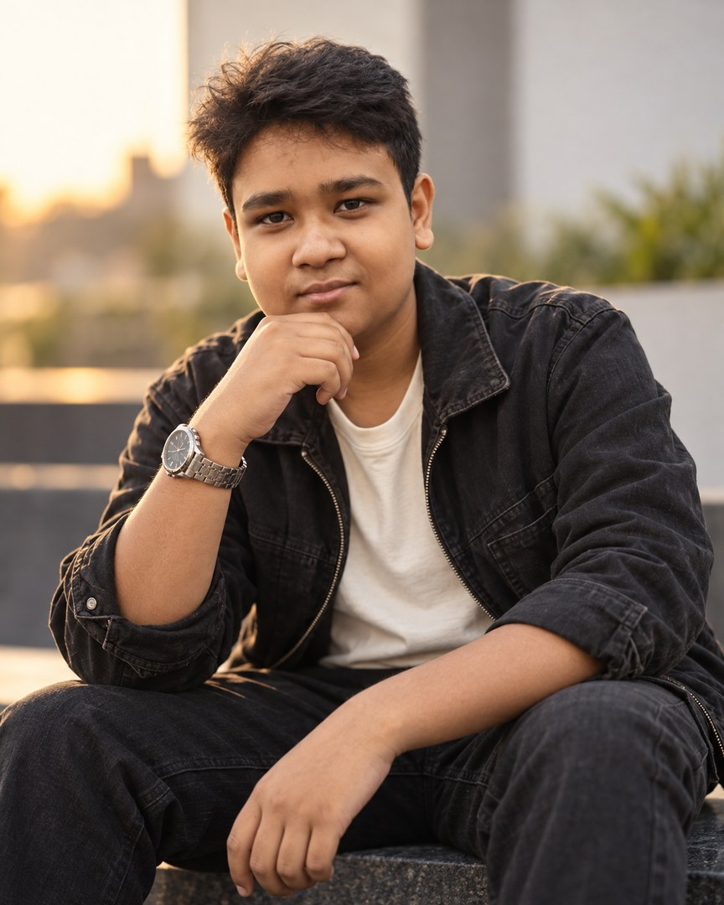

CURRENTLY LEARNING
Foundations.
Understanding the essentials before moving further.
- Ethical hacking fundamentals
- Networking basics
- Linux fundamentals
- Reconnaissance concepts
01 / LEARNING IN PUBLIC
SSC student. Cybersecurity beginner.
Learning ethical hacking one concept at a time.
Currently learning through Byte Capsule
02 / ABOUT ME

WHO AM I?
I'm Saad.
And this is my beginning.
I'm an SSC student taking my first steps into cybersecurity. I'm currently enrolled in Ethical Hacking for Beginners through Byte Capsule, where I'm building an understanding of networking, Linux, reconnaissance, and ethical security concepts.
This website documents what I'm learning and the direction I hope to grow in. I'm at the beginning, and I'm choosing to make that beginning visible, InshaAllah.
The journey is real.The learning is ongoing.
03 / THE LEARNING PATH
What I'm exploring now, what I want to try next,
and the direction I'm working toward.
CURRENTLY LEARNING
Understanding the essentials before moving further.
NEXT GOALS — PLANNED
Turning future understanding into responsible exploration.
LONG-TERM AMBITION
Grow toward a professional cybersecurity career through consistent learning and responsible practice.
Stay curious.
Build with intention.
Keep learning.
EXPLORATION / TOOLS
Tools I'm learning to use. Familiarity is a work in progress.
Beginner exploration
FUTURE / CREDENTIALS
I haven't earned these certifications yet. These are future ambitions, InshaAllah.
04 / BEYOND THE SCREEN
A few personal frames. Another way to meet the person
behind the learning.
A portrait from outside the screen.
A more formal frame in the same personal story.
whoami
saad: cybersecurity beginner
cat status.txt
ls ./connect
05 / OPEN A CONNECTION
Want to talk about cybersecurity, technology, or learning? A simple hello is a good place to start.
SYSTEM BOOT